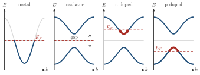
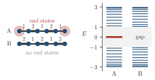

Advanced Quantum Materials 2027 · All lectures · Lecture notes
Session 1. Second Quantization, Mean-Field, and Spontaneous Symmetry Breaking
1.2 A tour of the quantum materials we will meet
Let us first give a short preview of the materials that this formalism will allow us to understand, so that the abstract tools of this session have concrete targets.
Insulators, such as magnesium oxide, sodium chloride or boron nitride, where a finite band gap does not allow electrons to propagate. Topological insulators look the same in the bulk, but they behave in a completely different way at the edge, and Session 3 explains this difference.
Semiconductors, such as gallium nitride, silicon and gallium arsenide, which have the same single-particle description as insulators but are lightly doped. For this reason they have free carriers, and these carriers are the ones that do the work in electronics and solar cells.
Magnets. Ferromagnets, antiferromagnets and spin spirals are all correlated materials, in the sense that they exist only because electrons repel each other through the Coulomb interaction. A different and more exotic case is the quantum magnet, where there are local moments at every site. These moments are so strongly entangled with each other that the material has no net magnetization at the microscopic level, and every site forms a singlet with its neighbors. We come back to these systems in Session 8.
Dirac and topological matter. The prototype is graphene, which is a single honeycomb layer of carbon, where electrons propagate with a topologically protected phase that is called a Berry phase. The same family includes quantum spin Hall insulators, which have helical edge states, Chern insulators, which have chiral edge states, and chiral superconductors, which host Majorana excitations.
Superconductors. These go from conventional superconductors mediated by phonons, such as aluminum, to correlated superconductors such as the cuprates and the pnictides, whose mechanism is still one of the biggest open problems in the field.
Fractional quantum matter. Here the fundamental excitations are real fractions of an electron. The fractional quantum Hall state is the best established example, and it has been observed for decades in materials such as gallium arsenide. Fractional Chern insulators are a newer and more accessible way to obtain the same physics, and they are a promising building block for new quantum devices.
The first two items of this list differ only in how the bands of a single electron are filled, and Schematic 1.3 shows this for an insulator and a doped semiconductor, next to a metal.


A topological insulator and an ordinary insulator both have a gap in the bulk. How do we tell them apart in an experiment?
Show the answers
- A. ✓ True
This is true. The bulk gap is present in both cases, so the bulk does not decide. Only the topological insulator has states inside the gap at its edge that carry current.
- B. ✗ False
This is false. Take a chain with alternating hoppings \(t_1=1,t_2=2\) and another with \(t_1=2,t_2=1\). Both have the same bulk bands and the same gap \(2\), but only one has states at the end. The bulk density of states is also identical in the two chains.

Two chains with the same bulk gap. In chain A the weak bond is at the ends, and the open chain has two states at \(E\approx0\), inside the gap. The chains are drawn with six sites, and the spectra are for 20 sites. In chain B the strong bond is at the ends, and the gap is empty. - C. ✗ False
This is false. In the Kane-Mele model of graphene, any small spin-orbit coupling opens a topological gap, even though carbon is a light atom. At the same time, an ordinary insulator can be made of heavy atoms.
The difference appears at the edge, where the topological insulator has states inside the gap.
A doped semiconductor conducts, while the undoped one with the same bands does not. What does the doping do?
Show the answers
- A. ✓ True
This is true. The bands stay the same and only the filling changes. A few electrons in the conduction band, or a few holes in the valence band, are enough to carry a current.
- B. ✗ False
This is false. Silicon doped with phosphorus keeps its gap of about \(1.1\) eV, and it conducts. The dopants are one atom in a million, which is too few to change the bands.
- C. ✗ False
This is false. In doped silicon the carriers are so dilute that they are almost free, and the material is not magnetic. The conduction comes from the number of carriers and not from their interaction.
The bands stay the same, and only the filling changes.
- Session 3 explains why the edge of a topological insulator conducts, with the bulk-boundary correspondence of Section 3.7. The two chains of the first quiz are the SSH model of Section 3.9.
- The Berry phase comes back as the Zak phase of the SSH chain in Section 3.9c, and the quantum spin Hall insulator in Section 3.11.
- The quantum magnets without order are the spin liquids of Session 8, starting from the frustration of Section 8.4.
- Chiral superconductors and their Majorana excitations are in Section 5.14 and Section 5.15, and the fractional quantum Hall state is built in Section 4.16.